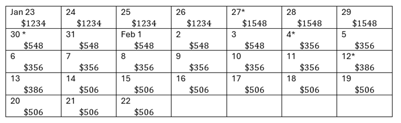

To find the ending balance, starting with the previous balance, we add the charges and subtract the credits.
\begin{equation*}
1234+314-1000-192+30+120=386
\end{equation*}
Therefore, the ending balance is $386.
To find the average daily balance, we first find the balance at the end of each day. Then we find the average of the daily balances. It can be helpful to write the balances in a calendar or grid.

Now we can find the average of the balances in each day of the cycle. We will use multiplication for the repeated addition, and we note that there are 31 days in the billing cycle.
\begin{equation*}
\frac{1234\cdot4+1548\cdot3+548\cdot5+356\cdot7+385\cdot2+506\cdot9 }{31}\approx$649.55
\end{equation*}
Alternatively, a spreadsheet can be used.